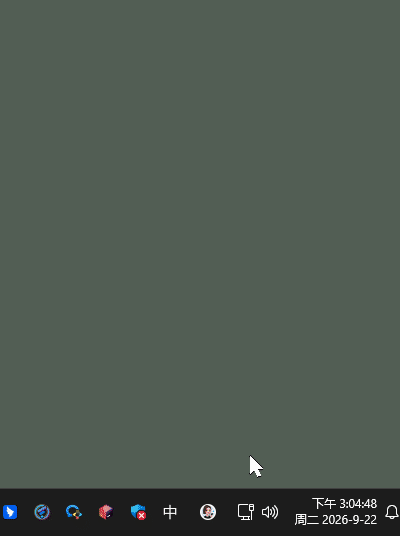
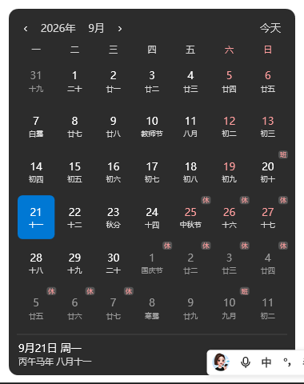
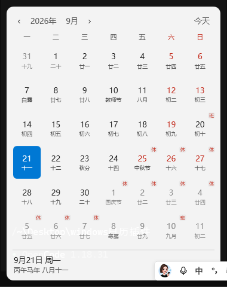
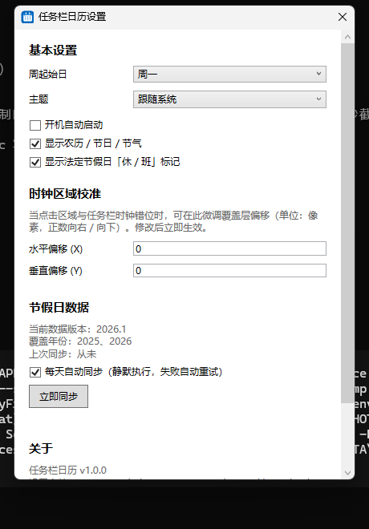

Win 11 原生日历
- 24H2 起日历默认折叠在通知底部，查阅繁琐
- 无传统农历日与初一月名展示
- 无二十四节气标识与民俗节日
- 无国务院调休「休」「班」提示
点击任务栏右下角时钟，弹出自研精美月历。自带农历、二十四节气与国务院法定节假日「休/班」角标；不破坏原生时钟外观，不影响通知中心，极致轻量无负担。

点击时钟平滑弹出 · 选中日期看详情 · Esc / 点击外部自动收起
专为 Windows 11 量身雕琢的桌面细节增强，轻巧、自然、纯粹
6 项核心能力
内置高精度公农历推算算法，支持初一月名转换、除夕/中秋/端午等民俗节日，二十四节气毫厘不差。

依据中国政府网最新节假日排班公告，后台静默校验更新；法定节假日红字标「休」，周末调休绿字标「班」。
遵循 Windows 11 Fluent 现代视觉规范，具备微阴影与圆角布局；自动跟随系统深/浅色模式无缝变换。
不注入进程、不使用全局鼠标钩子（规避杀毒误报）；以纯 Win32 隐形穿透层捕获点击，干净清爽。
空闲时不消耗 CPU（占用率为 0%）；内存占用约 50MB，与一个浏览器标签页相当，长期驻留无负担。
内置 UI Automation 4 级容灾定位，深度兼容 Win11 24H2 及 25H2 多种时钟类名；支持点击位置自定义微调。
月历面板与设置窗口的真实截图，所见即所得
浅色 / 深色双主题


双击安装器，三十秒完成，无需任何运行时组件
点击上方「立即下载」获取最新版本安装器（仅约 2.6 MB），保存到任意位置（如「下载」文件夹）即可。
全程无需 UAC 提权，默认安装到 %LOCALAPPDATA%\Programs\TaskbarCalendar，可自选目录。若弹出 SmartScreen 拦截提示，点击「更多信息」→「仍要运行」即可。
安装完成后程序自动运行并常驻系统托盘。此时点击任务栏右下角时钟，日历面板即刻展现在你眼前！托盘右键可一键设置开机自启动。
本程序基于 Windows 系统自带的 .NET Framework 4.8 构建（Windows 10 / 11 均已内置），安装器不会向你索要任何组件安装。安装位置在你的用户目录下，卸载时通过「设置 → 应用 → 任务栏日历」即可，同时自动清理开机自启项与快捷方式。
了解更多关于原理与日常使用的细节
完全不受影响。 本程序仅替换「点击时钟弹出日历」的操作行为。通知中心可随时通过点击时钟右侧的通知铃铛图标，或按下全局快捷键 Win + N 照常呼出。
右键任务栏右下角的托盘图标（蓝色日历图标），点击「设置」，在常规设置中勾选「开机自动启动」即可；也可以直接在托盘右键菜单中快速勾选。
不需要。 程序内置自动同步机制，每天会在后台静默校验国务院公布的最新节假日安排并存入本地缓存；即使完全离线运行，也能显示已缓存的节假日排班。
打开「设置」→「时钟区域校准」，提供了水平与垂直像素偏移微调滑块；针对特殊系统多屏环境，还支持「5 秒手动取点校准」，指哪打哪。
「设置 → 应用 → 任务栏日历 → 卸载」，或进入安装目录运行 unins000.exe。卸载时会自动清理开机自启项、快捷方式与卸载信息；你的日历设置与节假日数据保存在用户数据目录，可选择一并清除或保留。